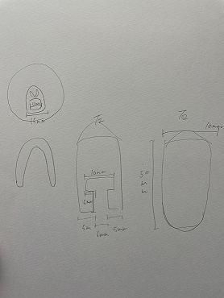
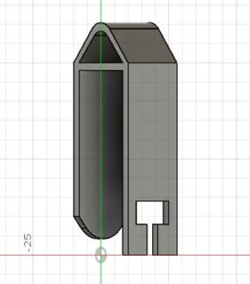
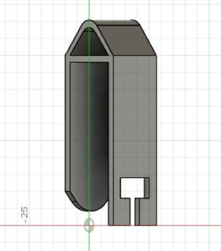

プルタグ
構想段階の手書きスケッチ

作品
 

設計ファイル
設計ファイル
作品の説明
これはプルタグ(缶の飲み物を飲む際に開けるやつ)専用のピンセット。
プルタグの持ち上げる方に丸くなっている方を差し込んで上に持ち上げると開けられるという仕組み。
なぜ作ろうと思ったのか
何を作ろうか考えているときに周りをみたら缶が置いてあって、急に閃いた。
爪を大事にしている人やネイルをしていて缶が開けにくい人に役立つのではないかと思った。
小さい子供でも簡単に開けやすくなれるように作ろうと思った。
制作プロセスの中で調べたこと
作るにあたって、まずプルタグの大きさを調べた。ネットで調べたがあまり私が探している情報がなかったため
家にあったものを使って調べた。横幅や縦の長さ、穴の大きさなどを調べた。
3Dプリンターの使い方
Fusion360
1.ユーティリティのメイクというところを押す
2.メイクから3Dプリントを選択し、「3Dプリントをユーティリティ、、、」のチェックを外す
3.印刷したい作品を選択し、OKを押す
4.名前をつけて保存する
↓
5.Curaに移動
6.右上のファイルのところからプリントしたい作品を選択
7.選択した作品を回転させたりする
8.できたら左下のスライスを押す
9.ディスクに保存を押す
*このときは必ず半角の英数字にする
↓
10.3Dプリンターの横に刺さってるメモリーを取る
11.自分のパソコンに差し込んでさっき保存したやつをコピーする
12.メモリーのところに貼り付ける
13.メモリーをプリンターに差し戻してプリントボタンを押す
14.自分のやつを選んで、プリントを押して始める
↓
完成